The model tools for the integration of transient problems¶
Although time integration scheme can be written directly using the model object by describing the problem to be solved at each iteration, the model object furnishes some basic tools to facilitate the writing of such schemes. These tools are based on the following basic principles:
The original variables of the model represent the state of the system to be solved at the current time step (say step n). This is the case even for a middle point scheme, mainly because if one needs to apply different schemes to different variables of the system, all variable should describe the system at a unique time step.
Some data are added to the model to represent the state of the system at previous time steps. For classical one-step schemes (for the moment, only one-step schemes are provided), only the previous time step is stored. For instance if u is a variable (thus represented at step n), Previous_u will be the data representing the state of the variable at the previous time step (step n-1). Eventually, for future extension to multi-step methods, Previous2_u may represent the variable at time step n-2.
Some intermediate variables are added to the model to represent the time derivative (and the second order time derivative for second order problem). For instance, if u is a variable, Dot_u will represent the first order time derivative of u and Dot2_u the second order one. One can refer to these variables in the model to add a brick on it or to use it in the weak form language. However, these are not considered to be independent variables, they will be linked to their corresponding original variable (in an affine way) by the time integration scheme. Most of the schemes need also the time derivative at the previous time step and add the data Previous_Dot_u and possibly Previous_Dot2_u to the model.
A different time integration scheme can be applied on each variable of the model. Note that most of the time, multiplier variable and more generally variables for which no time derivative is used do not need a time integration scheme.
The data t represent the time parameter and can be used (either in the weak form language or as parameter of some bricks). Before the assembly of the system, the data t is automatically updated to the time step n.
The problem to be solved at each iteration correspond to the formulation of the transient problem in its natural (weak) formulation in which the velocity and the acceleration are expressed by the intermediate variables introduced. For instance, the translation into the weak form language of the problem
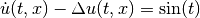
can simply be:
Dot_u*Test_u + Grad_u.Grad_Test_u - sin(t)*Test_u
(even though, of course, in this situation, the use of linear bricks is preferable for efficiency reasons)
For all implemented one-step schemes, the time step can be changed from an iteration to another for both order one and order two in time problems (or even quasi-static problems).
A scheme for second order in time problem (resp. first order in time) can be applied to a second or first order in time or even to a quasi-static problem (resp. to a first order or quasi-static problem) without any problem except that the initial data corresponding to the velocity/displacement have to be initialized with respect ot the order of the scheme. Conversely, of course, a scheme for first order problem cannot be applied to a second order in time problem.
The implicit theta-method for first-order problems¶
For a problem which reads
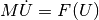
where 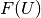 might be nonlinear (and may depend on some other variables for coupled problems), for 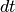 a time step, 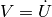 and 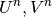 the approximation of 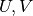 at time 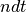, theta-method reads
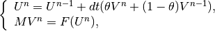
for 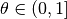 the parameter of the theta-method (for 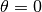, the method corresponds to the forward Euler method and is not an implicit scheme) and for 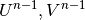 given.
Before the first time step, 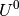 should be initialized, however, 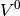 is also needed (except for 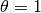). In this example, it should correspond to 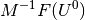. For a general coupled problem where 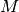 might be singular, a generic precomputation of is difficult to obtain. Thus have to be furnisded also. Alternatively (see below) the model object (and the standard solve) furnishes a mean to evaluate them thanks to the application of a Backward Euler scheme on a (very) small time step.
The following formula can be deduced for the time derivative:
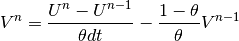
When applying this scheme to a variable “u” of the model, the following affine dependent variable is added to the model:
"Dot_u"
which represent the time derivative of the variable and can be used in some brick definition.
The following data are also added:
"Previous_u", "Previous_Dot_u"
which correspond to the values of “u” and “Dot_u” at the previous time step.
Before the solve, the data “Previous_u” (corresponding to in the example) has to be initialized (except for ). Again, “Previous_Dot_u” has to be either initialized or pre-computed as described in the next section. The affine dependence of “Dot_u” is thus given by:
Dot_u = (u - Previous_u)/(theta*dt) - Previous_Dot_u*(1-theta)/theta
Which means that “Dot_u” will be replaced at assembly time by its expression in term of “u” (multipied by 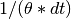) and in term of a constant remaining part depending on the previous time step. The addition of this scheme to a variable is to be done thanks to:
add_theta_method_for_first_order(model &md, const std::string &varname, scalar_type theta);
Precomputation of velocity/acceleration¶
Most of the time integration schemes (except, for instance, the backward Euler scheme) needs the pre-computation of the first or second order time derivative before the initial time step (for instance for the theta-method for first order problems, 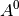 for second order problems ...).
The choice is let to the user to either initialize these derivative or to ask to the model to automatically approximate them.
The method used (for the moment) to approximate the supplementary derivatives may be explained in the example of the solve of
with a theta-method (see the previous section). In order to approximate 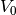, the theta-method is applied for (i.e. a backward Euler scheme) on a very small time step. This is possible since the backward Euler do not need an initial time derivative. Then the time derivative computed thanks to the backward Euler at the end of the very small time step is simply used as an approximation of the initial time derivative.
For a model md, the following instructions:
model.perform_init_time_derivative(ddt);
standard_solve(model, iter);
allows to perform automatically the approximation of the initial time derivative. The parameter ddt corresponds to the small time step used to perform the aproximation. Typically, dtt = dt/20 could be used where dt is the time step used to approximate the transient problem (see the example below).
The implicit theta-method for second-order problems¶
For a problem which reads
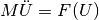
where might be nonlinear (and may depend on some othere variables for coupled problems), for a time step, , 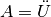 and 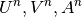 the approximation of 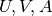 at time , the first oder theta-method reads
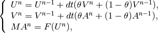
for the parameter of the theta-method (for , the method correspond to the forward Euler method and is not an implicit scheme) and for 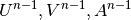 given.
At the first time step, 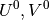 should be given and is to be given or pre-computed (except for ).
The following formula can be deduced for the time derivative:
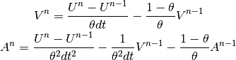
When aplying this scheme to a variable “u” of the model, the following affine dependent variables are added to the model:
"Dot_u", "Dot2_u"
which represent the first and second order time derivative of the variable and can be used in some brick definition.
The following data are also added:
"Previous_u", "Previous_Dot_u", "Previous_Dot2_u"
which correspond to the values of “u”, “Dot_u” and “Dot2_u” at the previous time step.
Before the solve, the data “Previous_u” and “Previous_Dot_u” (corresponding to in the example) have to be initialized and “Previous_Dot2_u” should be either initialized or precomputed (see the previous section, and except for ). The affine dependences are thus given by:
Dot_u = (u - Previous_u)/(theta*dt) - Previous_Dot_u*(1-theta)/theta
Dot2_u = (u - Previous_u)/(theta*theta*dt*dt) - Previous_Dot_u/(theta*theta*dt) - Previous_Dot2_u*(1-theta)/theta
The addition of this scheme to a variable is to be done thanks to:
add_theta_method_for_second_order(model &md, const std::string &varname,
scalar_type theta);
The implicit Newmark scheme for second order problems¶
For a problem which reads
where might be nonlinear (and may depend on some othere variables for coupled problems), for a time step, , and the approximation of at time , the first oder theta-method reads
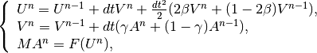
for 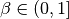 and 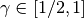 are the parameters of the Newmark scheme and for given.
At the first time step, should be given and is to be given or pre-computed (except for 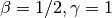).
The following formula can be deduced for the time derivative:
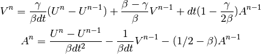
When aplying this scheme to a variable “u” of the model, the following affine dependent variables are added to the model:
"Dot_u", "Dot2_u"
which represent the first and second order time derivative of the variable and can be used in some brick definition.
The following data are also added:
"Previous_u", "Previous_Dot_u", "Previous_Dot2_u"
which correspond to the values of “u”, “Dot_u” and “Dot2_u” at the previous time step.
Before the first solve, the data “Previous_u” and “Previous_Dot_u” (corresponding to in the example) have to be initialized. The data “Previous_Dot2_u” is to be given or precomputed (see Precomputation of velocity/acceleration and except for ).
The addition of this scheme to a variable is to be done thanks to:
add_Newmark_scheme(model &md, const std::string &varname,
scalar_type beta, scalar_type gamma);
Transient terms¶
As it has been explained in previous sections, some intermediate variables are added to the model in order to represent the time derivative of the variables on which the scheme is applied. Once again, if “u” is such a variable, “Dot_u” will represent the time derivative of “u” approximated by the used scheme.
This also mean that “Dot_u” (and “Dot2_u” in order two in time problems) can be used to express the transient terms. In the weak form language, the term:
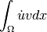
can be simply expressed by:
Dot_u*Test_u
Similarly, every existing model brick of GetFEM++ can be applied to “Dot_u”. This is the case for instance with:
getfem::add_mass_brick(model, mim, "Dot_u");
which adds the same transient term.
VERY IMPORTANT: When adding an existing model brick applied to an affine dependent variable such as “Dot_u”, it is always assumed that the corresponding test function is the one of the corresponding original variable (i.e. “Test_u” here). In other words, “Test_Dot_u”, the test variable corresponding to the velocity, is not used. This corresponds to the choice made to solve the problem in term of the original variable, so that the test function corresponds to the original variable.
Another example of model brick which can be used to account for a Kelvin-Voigt linearized viscosity term is the linearized elasticity brick:
getfem::add_isotropic_linearized_elasticity_brick(model, mim, "Dot_u", "lambda_viscosity", "mu_viscosity");
when applied to an order two transient elasticity problem.
Computation on the sequence of time steps¶
Typically, the solve on the different time steps will take the following form:
for (scalar_type t = 0.; t < T; t += dt) { // time loop
// Eventually compute here some time dependent terms
iter.init();
getfem::standard_solve(model, iter);
// + Do something with the solution (plot or store it)
model.shift_variables_for_time_integration();
}
Note that the call of the method:
model.shift_variables_for_time_integration();
is needed between two time step since it will copy the current value of the variables (u and Dot_u for instance) to the previous ones (Pevious_u and Previous_Dot_u).
Boundary conditions¶
Standard boundary conditions can of course be applied normally to the different variables of the unknown. By default, applying Dirichlet, Neumann or contact boundary conditions to the unknown simply means that the conditions are prescribed on the variable at the current time step n.
Small example: heat equation¶
The complete compilable program corresponds to the test program tests/heat_equation.cc of GetFEM++ distribution. See also /interface/tests/matlab/demo_wave_equation.m for an example of order two in time problem with the Matlab interface.
Assuming that mf_u and mim are valid finite element and integration methods defined on a valid mesh, the following code will perform the approximation of the evolution of the temperature on the mesh assuming a unitary diffusion coefficient:
getfem::model model;
model.add_fem_variable("u", mf_u, 2); // Main unknown of the problem
getfem::add_generic_elliptic_brick(model, mim, "u"); // Laplace term
// Volumic source term.
getfem::add_source_term_generic_assembly_brick(model, mim, "sin(t)*Test_u");
// Dirichlet condition.
getfem::add_Dirichlet_condition_with_multipliers
(model, mim, "u", mf_u, DIRICHLET_BOUNDARY_NUM);
// transient part.
getfem::add_theta_method_for_first_order(model, "u", theta);
getfem::add_mass_brick(model, mim, "Dot_u");
gmm::iteration iter(residual, 0, 40000);
model.set_time(0.); // Init time is 0 (not mandatory)
model.set_time_step(dt); // Init of the time step.
// Null initial value for the temperature.
gmm::clear(model.set_real_variable("Previous_u"));
// Automatic computatio of Previous_Dot_u
model.perform_init_time_derivative(dt/20.);
iter.init();
standard_solve(model, iter);
// Iterations in time
for (scalar_type t = 0.; t < T; t += dt) {
iter.init();
getfem::standard_solve(model, iter);
// + Do something with the solution (plot or store it)
// Copy the current variables "u" and "Dot_u" into "Previous_u"
// and "Previous_Dot_u".
model.shift_variables_for_time_integration();
}
Implicit/explicit some terms¶
...
Explicit schemes¶
...
Time step adaptation¶
...
Quasi-static problems¶
...

目次
- The model tools for the integration of transient problems
- The implicit theta-method for first-order problems
- Precomputation of velocity/acceleration
- The implicit theta-method for second-order problems
- The implicit Newmark scheme for second order problems
- Transient terms
- Computation on the sequence of time steps
- Boundary conditions
- Small example: heat equation
- Implicit/explicit some terms
- Explicit schemes
- Time step adaptation
- Quasi-static problems
前のトピックへ
次のトピックへ
Small sliding contact with friction bricks
Download
Main documentations
- GetFEM++ User documentation
- Python Interface
- Matlab Interface
- Scilab Interface
- Gmm++
- GetFEM++ project